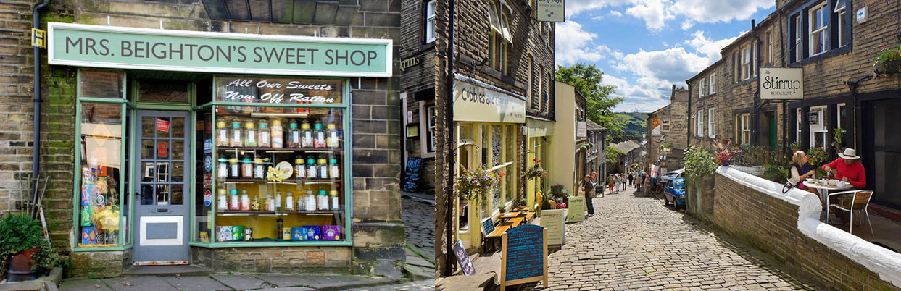
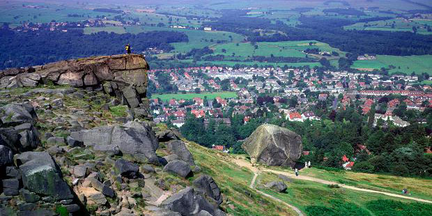
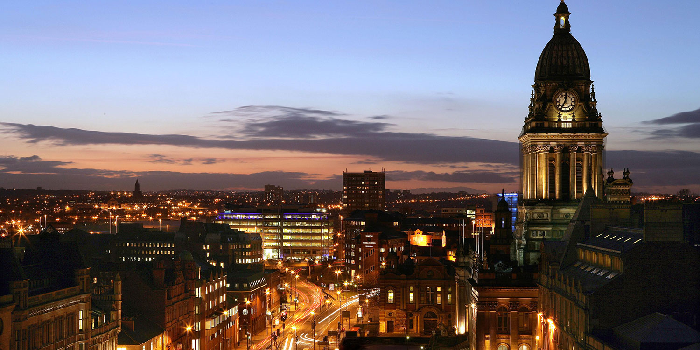
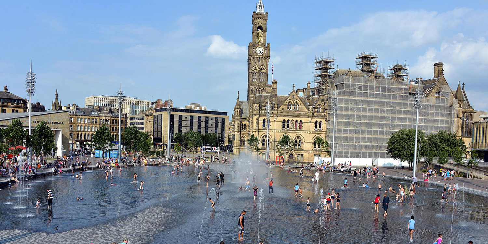
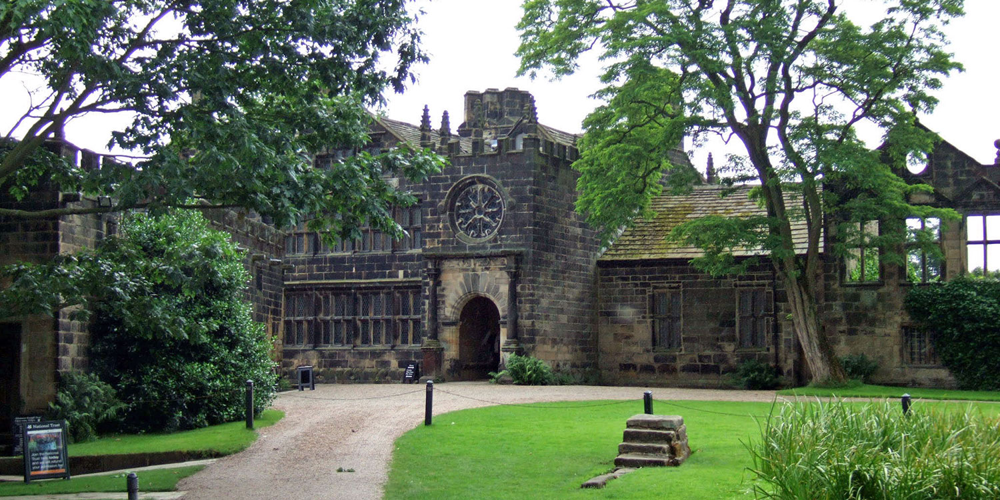
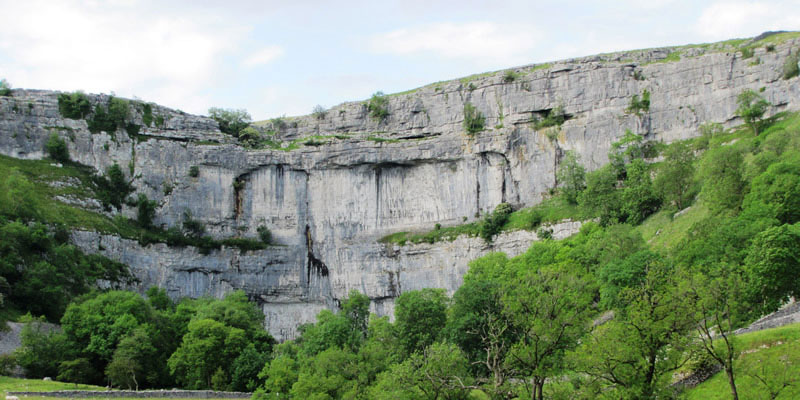
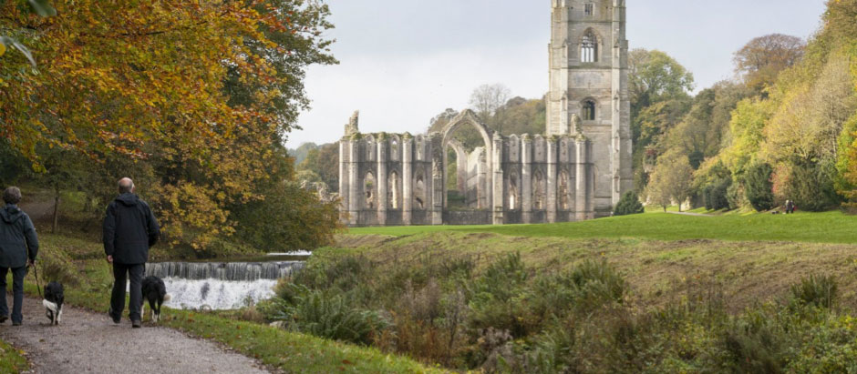
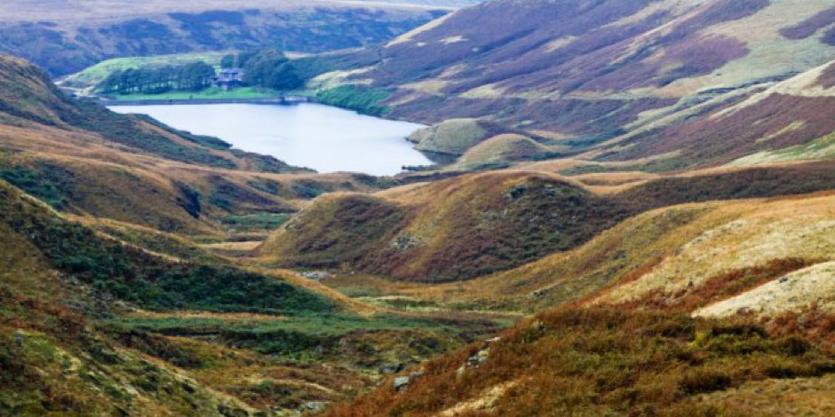

Lynds Ollie
Ollie
23.07.16 - West Yorkshire
Things to do in God's own county
If you decide to make a weekend of your trip up’t north, you’re in luck! There’s loads to do from visit delightful, quaint little villages to extensive rambling on the Yorkshire Moors, trying out tasty ales to shopping in Leeds city centre. Here’s a list of our top pics...
VILLAGES, TOWNS AND CITIES
Howarth
It’s Bronte country! According to Yorkshire.com it’s worth a trip, and they know what they’re on about.
"Haworth is an undisputed literary mecca, attracting visitors from all around the world. With its historic cobbled Main Street, iconic parsonage and rolling moors, the picturesque proportions of this Airedale village exude a vintage charm that makes you feel you've stepped into another era."
More info here:
Ilkley (moor baht’at)
Yorkshire.com sum it up pretty well again:
"Ilkley is the ideal base for a holiday in the Yorkshire Dales. This pretty, traditional spa town offers some of Yorkshire's finest tearooms, magnificent countryside and a rock climbers' paradise with the famous Cow and Calf Rocks sitting proudly above the town, on the rolling Yorkshire moors."
There’s also great pubs, boutiquey shops and friendly northerners.
Leeds (the city where it all began)
Leeds is where we first met in the summer of ’08 - whilst Lynds was working as a waitress in a cocktail bar - and spent many happy times as students here. There’s lots to do from museums to restaurants, bars and cafes.
We’ll let them do the talking...
Bradford
They make a mean curry. There’s also museums and according to them you can ‘be amazed and discover the unexpected.’
HISTORICAL VISITS AND OURDOORSY STUFF
East Riddlesden Hall
Yes, this is where we are having a reception, but the Tudor hall is also a fascinating National Trust property in its own right. The volunteers to offer guidance and small guided tours of each room are excellent.
Malham Cove
Malham Cove is a huge curving amphitheatre shaped cliff formation of limestone rock. It made headlines last year during the terrible floods because a waterfall erupted over it for the first time in living memory.
The vertical face of the cliff is about 260 feet high. The top of the cove is a large area of deeply eroded limestone pavement, of a strange pattern rarely seen in England. The majesty of Malham Cove looks out over the Village of Malham and has been attracting visitors for centuries.
Fountains Abbey
The dramatic Abbey ruins at Fountains are the largest monastic ruins in the country. The Abbey was founded in 1132 by 13 Benedictine monks from St Mary’s in York seeking to live a devout and simple lifestyle.
Walking the dales
Fancy a ramble? You’ve come to the right place, there’s loads of options. Here are some good ones...